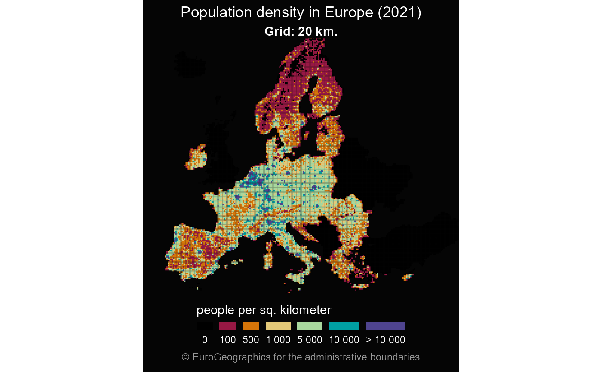

Get grid cells covering covering Europe for various resolutions
Source:R/gisco_get_grid.R
gisco_get_grid.RdThese datasets contain grid cells covering the European land territory, for various resolutions from 1km to 100km. Base statistics such as population figures are provided for these cells.
gisco_get_grid(
resolution = "20",
spatialtype = "REGION",
cache_dir = NULL,
update_cache = FALSE,
verbose = FALSE
)Arguments
- resolution
Resolution of the grid cells on kms. Available values are "1", "2", "5", "10", "20", "50", "100". See Details
- spatialtype
Select one of "REGION" or "POINT".
- cache_dir
A path to a cache directory. See About caching.
- update_cache
A logical whether to update cache. Default is
FALSE. When set toTRUEit would force a fresh download of the source .geojson file.- verbose
Logical, displays information. Useful for debugging, default is
FALSE.
Value
A POLYGON/POINT object.
Details
Files are distributed on EPSG:3035.
The file sizes range is from 428Kb (resolution = "100")
to 1.7Gb resolution = "1". For resolutions 1km and 2km you would
need to confirm the download.
Note
There are specific downloading provisions, please see https://ec.europa.eu/eurostat/web/gisco/geodata/reference-data/grids
About caching
You can set your cache_dir with gisco_set_cache_dir().
Sometimes cached files may be corrupt. On that case, try re-downloading
the data setting update_cache = TRUE.
If you experience any problem on download, try to download the
corresponding .geojson file by any other method and save it on your
cache_dir. Use the option verbose = TRUE for debugging the API query.
For a complete list of files available check gisco_db.
Author
dieghernan, https://github.com/dieghernan/
Examples
# \donttest{
grid <- gisco_get_grid(resolution = 20)
grid$popdens <- grid$TOT_P_2011 / 20
breaks <-
c(
0,
0.1, # For capturing 0
100,
500,
1000,
2500,
5000,
10000,
25000,
max(grid$popdens) + 1
)
# Cut groups
grid$popdens_cut <- cut(grid$popdens,
breaks = breaks,
include.lowest = TRUE
)
cut_labs <- prettyNum(breaks, big.mark = " ")[-1]
cut_labs[1] <- "0"
cut_labs[9] <- "> 25 000"
pal <- c("black", hcl.colors(length(breaks) - 2,
palette = "Spectral",
alpha = 0.9
))
library(ggplot2)
ggplot(grid) +
geom_sf(aes(fill = popdens_cut), color = NA) +
coord_sf(
xlim = c(2500000, 7000000),
ylim = c(1500000, 5200000)
) +
scale_fill_manual(
values = pal, na.value = "black",
name = "people per sq. kilometer",
labels = cut_labs,
guide = guide_legend(
direction = "horizontal",
keyheight = 0.5,
keywidth = 2,
title.position = "top",
title.hjust = 0.5,
label.hjust = .5,
nrow = 1,
byrow = TRUE,
reverse = FALSE,
label.position = "bottom"
)
) +
theme_void() +
labs(
title = "Population density in Europe",
subtitle = "Grid: 20 km.",
caption = gisco_attributions()
) +
theme(
plot.background = element_rect(fill = "grey2"),
plot.title = element_text(
size = 18, color = "white",
hjust = 0.5,
),
plot.subtitle = element_text(
size = 14,
color = "white",
hjust = 0.5,
face = "bold"
),
plot.caption = element_text(
size = 9, color = "grey60",
hjust = 0.5, vjust = 0,
margin = margin(t = 5, b = 10)
),
legend.text = element_text(
size = 8,
color = "white"
),
legend.title = element_text(
color = "white"
),
legend.position = "bottom"
)

# }